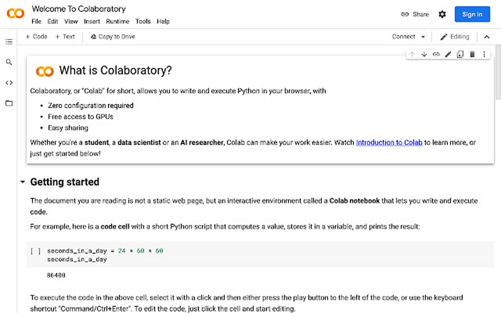
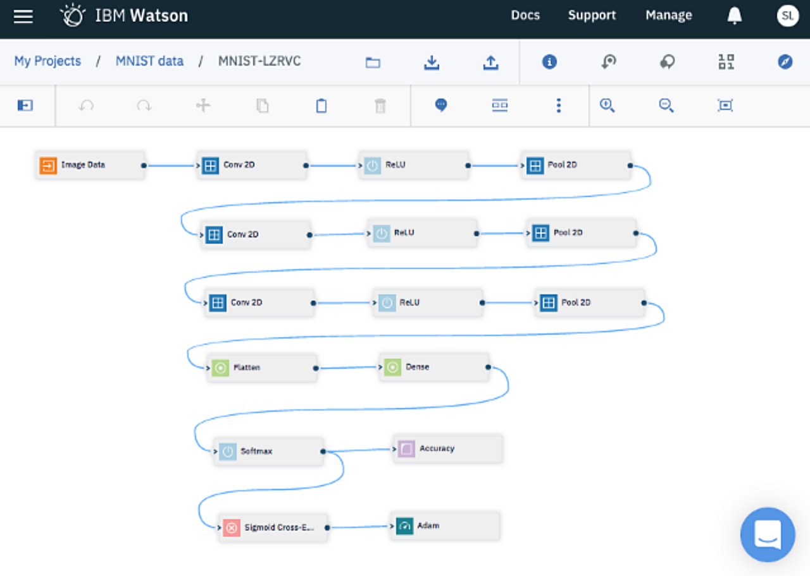
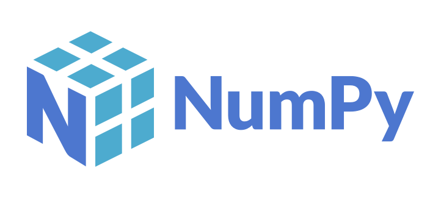
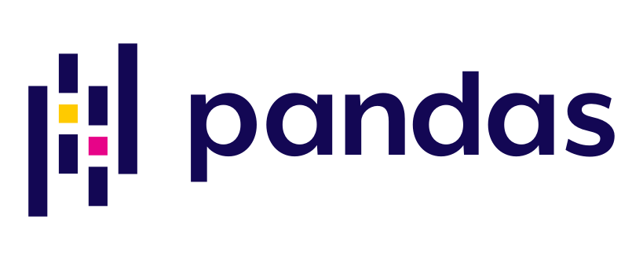
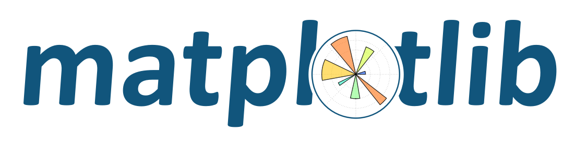
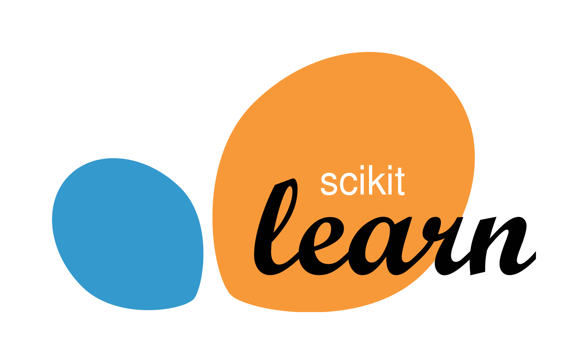

Mashinani o'rganish turlari
Mashinani o'rganish nima ?
Artur Samuel (1959) ga ko'ra, "Kompyuterlarga aniq dasturlashtirilmagan holda o'rganish qobiliyatini beradigan tadqiqot sohasi". Mashinani o'rganish - bu kompyuterlarga aniq dasturlashtirilmagan holda o'rganish qobiliyatini beradigan fan sohasi. Mashinani o'rganishdan tashqari , sun'iy intellekt va chuqur o'rganish haqida ham tez-tez eshitishingiz kerak . Mashinani o'rganish - bu sun'iy intellektning bir tarmog'i, aniqrog'i ma'lumotlardagi naqshlarni o'rganish uchun statistik usullardan foydalanadi. Chuqur o'rganish esa mashinani o'rganishning bir tarmog'idirkatta hajmdagi ma'lumotlarni o'rganish va moslashtira oladigan sun'iy neyron tarmoq algoritmlari bilan.
1. Nazorat ostidagi ta’lim
Nazorat ostida o'rganish - bu o'quv jarayonida kerakli echimni (ko'pincha yorliq deb ataladi) o'z ichiga olgan mashinani o'rganishning bir turi . Mashinani oʻrganish modellarini oʻrganishda foydalaniladigan maʼlumotlar toʻplamida allaqachon javob yorliqlari va maʼlumotlar va teglar juftligi namunalarini oʻrganish uchun algoritmlar mavjud.
2. Nazoratsiz ta’lim
Nazorat ostidagi ta'limdan farqli o'laroq , nazoratsiz o'rganishda foydalanilgan ma'lumotlar to'plamida yorliqlar yo'q. Mashinani o'rganish modellari odamlar tomonidan taqdim etilmagan holda ma'lumotlarni qo'lda belgilash yoki guruhlash uchun o'rganish jarayonlarini mustaqil ravishda amalga oshiradi.
3. Yarim nazorat ostida o'qitish
Yarim nazorat ostida o'rganish - bu nazorat ostida va nazoratsiz o'rganish usullarini birlashtirgan mashinani o'rganishning bir turi . Mashinani o'rganish modellarini o'rgatish uchun foydalaniladigan ma'lumotlar to'plamlari qisman odamlar tomonidan etiketlanadi va qisman yorliqsiz. Masalan, Google Photos, u yuzning ma'lum bir suratida shaxsning ism yorlig'i bilan belgilanadi, ba'zilarida esa yo'q.
4. O‘qitishni mustahkamlash
Kuchaytirishni o'rganish - bu mukofot va jarima tizimidan foydalanadigan mashinani o'rganish modelini o'rganish usuli . Mashinani o'rganish agentlari berilgan qiyinchiliklar yoki muammolarni muvaffaqiyatli bajarsalar, mukofotlar beriladi , agar agentlar qiyinchiliklarni bajara olmasalar, jarimalar beriladi. Kuchaytirishni o'rganish modeli imkon qadar ko'proq mukofot olishni o'rganishni davom ettiradi va jazolardan qochadi.
Mashina o'rganish vositalari
Python - bu Data Scientists va Machine Learning (ML) ishlab chiquvchilari tomonidan ishlatiladigan eng mashhur til . Python-ning yana bir afzalligi shundaki, u oddiy sintaksisi tufayli o'rganish oson bo'lgan dasturlash tilidir.
Mashinani o'rganish modelini ishlab chiqishda odatda noutbuklar deb ataladigan asbob yoki asboblar kerak bo'ladi. Bu safar muhokama qilinadigan daftar veb-ga asoslangan ( veb-ga asoslangan interaktiv rivojlanish muhiti ). Ushbu daftar bilan mashinani o'rganish dasturlarini yaratishda Python dasturlash tilidan foydalaniladi. Rasmiy Python sahifasida Python dasturlash tiliga havolalarni ko'rishingiz mumkin .
1. Jupyter daftarchasi

Jupyter Notebook - bu turli xil dasturlash tillarida interaktiv hisoblash uchun ishlatilishi mumkin bo'lgan bepul, ochiq manbali dasturiy ta'minot va veb-xizmat, ulardan biri Python. Jupyter Notebook-dan to'g'ridan-to'g'ri Jupyter Notebook-ni o'rnatish va ishlatish yo'riqnomasi orqali o'rnatish orqali foydalanish mumkin yoki to'g'ridan-to'g'ri Jupyter-ni sinab ko'ring brauzer orqali , keyin Jupyter Notebook-ni tanlang.
2. Google Colaboratory

Google Colaboratory yoki tez-tez Colab deb qisqartirilgan bu bizga brauzer orqali Python kodini yozish va bajarish imkonini beruvchi dasturdir . U mashinani o'rganish va ma'lumotlarni tahlil qilish uchun juda mos keladi va ko'pincha yangi boshlanuvchilar tomonidan qo'llaniladi. Google Colab-dan foydalanish uchun ushbu havola orqali o'tishingiz mumkin .
3. IBM Watson Studio

IBM Watson Studio - bu tahlilchilar va ma'lumotlar olimlari tomonidan keng qo'llaniladigan IBM xizmati. Shuningdek, siz kodni IBM Watson Studio kabi xizmatlarda kompyuterga hech qanday dasturiy ta'minotni o'rnatmasdan onlayn ishlatishingiz mumkin. IBM Watson Studio'dan foydalanishdan oldin, avval IBM Cloud hisobini yarating. IBM Cloud hisob qaydnomasi IBM Watson Studio, IBM Watson Machine Learning va IBM Cloud-ga kirish uchun ishlatilishi mumkin. IBM Watson Studio'dan foydalanish uchun avval IBM Cloud uchun ro'yxatdan o'tish orqali ro'yxatdan o'tishingiz, keyin esa IBM Cloud tizimiga kirishingiz mumkin .
Mashina o'rganishdagi mashhur kutubxonalar
Python-ni mashhur qiladigan yana bir omil - uning boshidan oxirigacha mashinani o'rganish loyihalarini ishlab chiqishda foydalanish mumkin bo'lgan keng qamrovli kutubxona . Python-da ma'lumotlarni yuklash , vizualizatsiya qilish , statistika , ma'lumotlarni qayta ishlash , tabiiy tilni qayta ishlash , tasvirni qayta ishlash va hokazolar uchun kutubxonalar mavjud.
Mashinani o'rganish loyihalarida ishlashimizni osonlashtiradigan ba'zi kutubxonalar quyidagi ro'yxatda ko'rsatilgan.
1. NumPy

NumPy massivlarni qayta ishlash uchun kutubxona sifatida juda mashhur. Uning orqasida joylashgan murakkab funktsiyalar Numpy-ni ko'p o'lchovli massivlar va katta matritsalarni qayta ishlashda juda kuchli qiladi. TensorFlow kabi ML kutubxonalari, shuningdek, tensor yoki N o'lchovli massivni qayta ishlash uchun Numpy-dan foydalanadi.
2. Pandas

Pandas ma'lumotlarni tahlil qilish va manipulyatsiya qilish uchun sevimli kutubxonalardan biridir. Nima uchun ikkalasi ham muhim? Modelni ishlab chiqish bosqichiga kirishdan oldin ma'lumotlarni qayta ishlash va tozalash kerak. Bu jarayon hatto ML loyihasini ishlab chiqishda eng ko'p vaqt talab qiladigan jarayondir. Pandalar kutubxonasi ma'lumotlarni qayta ishlash va tozalashni osonlashtiradi.
3. Matplotlib

Matplotlib bu 2 o'lchamdagi ma'lumotlarni chizish yoki vizualizatsiya qilish uchun kutubxona. Matplotlib yuqori sifatli grafiklarni yaratishga qodir. Matplotlib-dan gistogrammalar, scatter chizmalari, shtrixli grafiklar, doiraviy diagrammalar kabi chizmalar yaratish uchun bir necha qator kodlardan foydalanish mumkin. Bu kutubxona foydalanuvchilarga juda qulay.
4. Scikit Learn

Scikit Learn eng mashhur ML kutubxonalaridan biridir. Scikit Learn to'g'ridan-to'g'ri foydalanish mumkin bo'lgan mashinani o'rganish algoritmlarining keng tanlovini taqdim etadi, masalan, tasniflash, regressiya, klasterlash, o'lchamlarni kamaytirish va ma'lumotlarni qayta ishlash. Bundan tashqari, Scikit Learn ma'lumotlarni tahlil qilish uchun ham ishlatilishi mumkin.
5. TensorFlow

TensorFlow bu Google tomonidan ishlab chiqilgan va foydalaniladigan mashinalarni o'rganish uchun ochiq manbali ramka. TensorFlow yangi boshlanuvchilar va mutaxassislar uchun ML modellarini yaratishni osonlashtiradi. U chuqur o'rganish, kompyuterni ko'rish, tabiiy tilni qayta ishlash va mustahkamlashni o'rganish uchun ishlatilishi mumkin.
6. PyTorch
Facebook tomonidan ishlab chiqilgan PyTorch kutubxona bo'lib, undan ML muammolari, kompyuterni ko'rish, tabiiy tillarni qayta ishlash uchun foydalanish mumkin. TensorFlow bilan ayniqsa mashinani o'rganish tizimi sifatida raqobatlashadigan PyTorch akademiklar orasida TensorFlowga qaraganda ko'proq mashhur. Ammo sanoatda TensorFlow PyTorch-ga qaraganda yaxshi miqyosliligi tufayli mashhurroq.
7. Keras
Keras bu chuqur o'rganish uchun ajoyib kutubxona. Kerasni juda mashhur qiladigan omillardan biri uning chuqur o'rganishni rivojlantirishda minimalistik va oddiy ishlatilishidir. Keras TensorFlow ustiga qurilgan, bu Kerasni TensorFlowga qaraganda yuqori darajadagi API qiladi, shuning uchun interfeys TensorFlowga qaraganda osonroq. Keras qisqa vaqt ichida chuqur o'rganish modellarini ishlab chiqish yoki prototiplash uchun juda mos keladi.